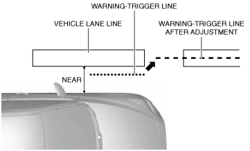
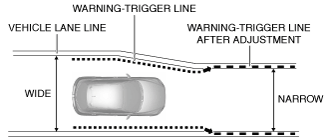
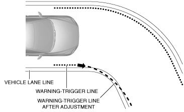
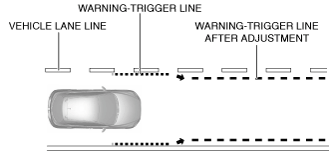

FORWARD SENSING CAMERA (FSC)
id092200029300
Purpose
Function
Light-emitting object (on-coming vehicle, vehicle ahead, street lights) recognition function
am2zzn00002904
|
am2zzn00002905
|
am2zzn00002906
|
Vehicle lane lines and travel lane recognition function
adejjn00003684
|
LDWS warning-trigger line setting function
am2zzn00002907
|
am2zzn00002908
|
LDWS warning-trigger line auto-adjust function
am2zzn00002909
|
|
Detection state |
Adjustment |
|---|---|
|
A condition in which distance between vehicle and vehicle lane line recognized by forward sensing camera (FSC) is closer than specified value (such as driving close to either side continuously) is continuously detected for a certain period of time.
|
 |
|
Recognized travel lane width decreases to certain width or less
|
 |
|
Recognized vehicle lane line is curved a certain value or more and the vehicle is determined to be traveling on curved roads (out-in-out travel)
|
 |
|
Width of recognized travel lane is wider than certain width
|
 |
Aiming correction function
am2zzn00002914
|
HBC warning light (amber), LDWS OFF indicator light, and LDWS warning light burnt out bulb check function
On-board diagnostic function
Construction
am2zzn00002915
|
am2zzn00004892
|
Operation
Camera range
adejjn00003694
|
Position calculation
am2zzn00002916
|
Fail-safe